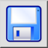
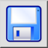
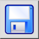
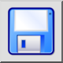

Spara
Verktygsfält / ikon:
 

Meny: Fil > Spara
Genväg: Ctrl+S (Mac: ⌘S)
Kommandon: save
Detta är en automatisk översättning.
Verktygsfält / ikon:
 

Meny: Fil > Spara
Genväg: Ctrl+S (Mac: ⌘S)
Kommandon: save
Detta kommando sparar den aktuella ritningen i samma fil som den laddades från. Om du vill spara en nyskapad ritning eller spara den aktuella ritningen till en ny fil, använd istället menyn File - Save As. Du kommer då att bli ombedd att ange ett filnamn innan ritningen sparas